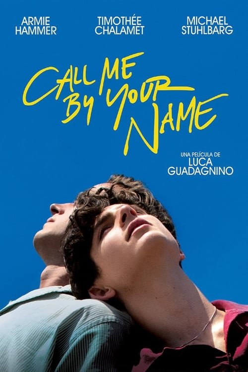

Call Me by Your Name (2017)
Sinopsis Rápida
Un romance estival entre un joven y un estudiante de posgrado en la Italia rural de los años 80 desata una tormenta de pasión y descubrimiento propio, dejando una marca indeleble en sus vidas.
Sinopsis Detallada
Call Me by Your Name narra la intensa historia de amor entre Elio, un adolescente de 17 años, y Oliver, un atractivo estudiante estadounidense que llega a pasar el verano en la villa familiar de Elio en Italia. La película explora con delicadeza y realismo la evolución de su relación, desde la atracción inicial hasta la culminación de su pasión y las consecuencias de este breve pero trascendental encuentro. El filme captura la belleza de la Italia rural, la intensidad del primer amor y la angustia de la despedida con una sensibilidad poética excepcional. El guion, basado en la novela de André Aciman, se destaca por su sutileza y honestidad al abordar temas de identidad sexual y autodescubrimiento.
¿Por qué tenés que verla?
- Una historia de amor inolvidable con una química excepcional entre los actores.
- La sublime banda sonora y la fotografía deslumbrante que captura la atmósfera italiana.
- Su impacto cultural en la representación del amor y la sexualidad juvenil.
- Una exploración profunda y honesta del primer amor y el autodescubrimiento.
Idea Extra
Comparación de la adaptación cinematográfica con la novela de André Aciman